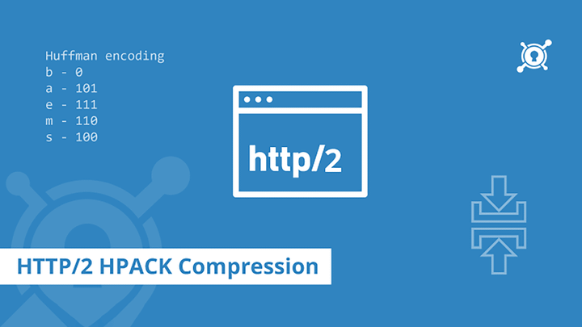

Detailed HTTP/2 header compression algorithm-HPACK

在 HTTP/1.1（请参阅 RFC7230）中，header 字段未被压缩。随着网页内的请求数增长到需要数十到数百个请求的时候，这些请求中的冗余 header 字段不必要地消耗了带宽，从而显着增加了延迟。
SPDY 最初通过使用 DEFLATE 格式压缩 header 字段来解决此冗余问题，事实证明，这种格式非常有效地表示了冗余 header 字段。但是，这种方法暴露了安全风险，如 CRIME（轻松实现压缩率信息泄漏）攻击所证明的安全风险（请参阅 CRIME）。
本规范定义了 HPACK，这是一种新的压缩方法，它消除了多余的 header 字段，将漏洞限制到已知的安全攻击，并且在受限的环境中具有有限的内存需求。第 7 节介绍了 HPACK 的潜在安全问题。
HPACK 格式特意被设计成简单且不灵活的形式。两种特性都降低了由于实现错误而引起的互操作性或安全性问题的风险。没有定义扩展机制；只能通过定义完整的替换来更改格式。
点击阅读更多看全文。